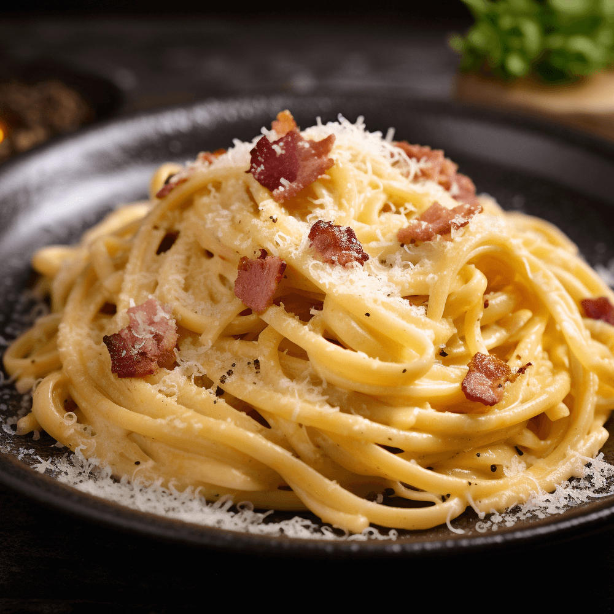
Паста карбонара
- Время
- 25 мин
- Ккал
- 620
О себе — кулинар и фуд-блогер
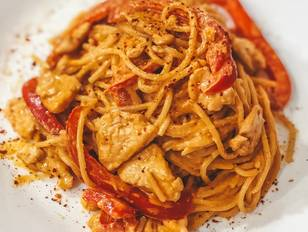

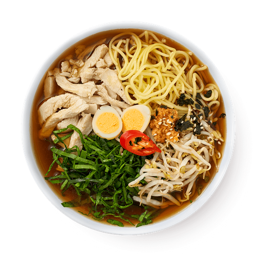
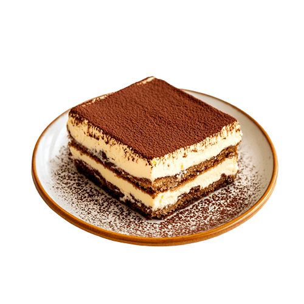
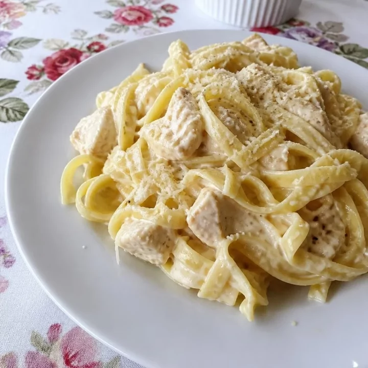
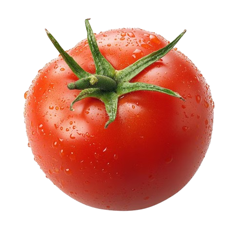
Источник ликопина, поддерживает сердце.
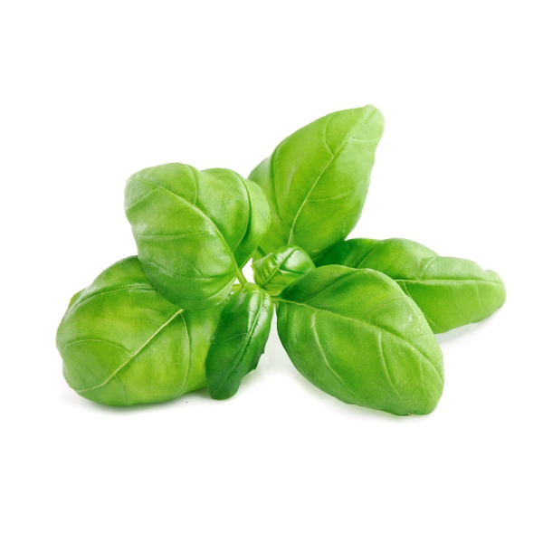
Эфирные масла улучшают пищеварение.
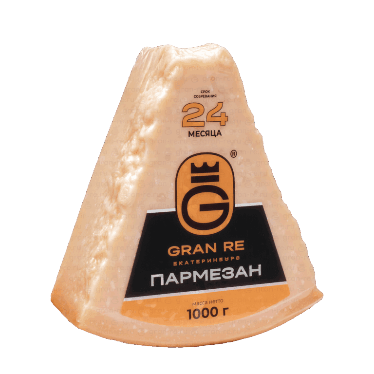
Много кальция и легкоусвояемого белка.
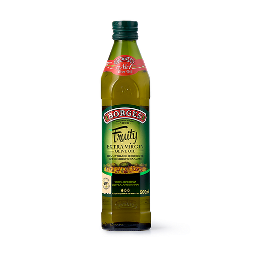
Полезные жиры и витамин E.
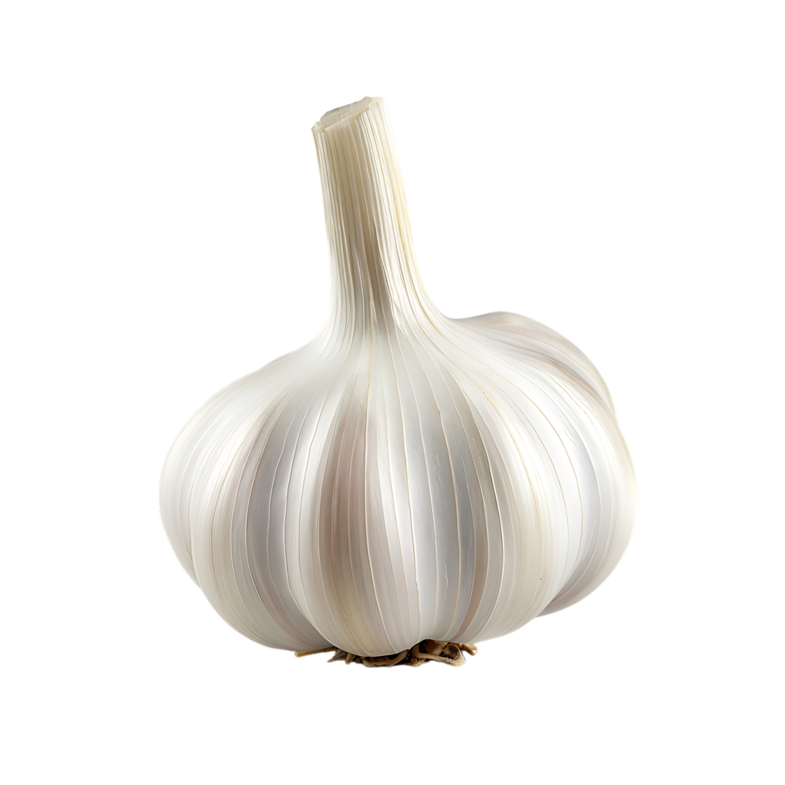
Природный антисептик, укрепляет иммунитет.
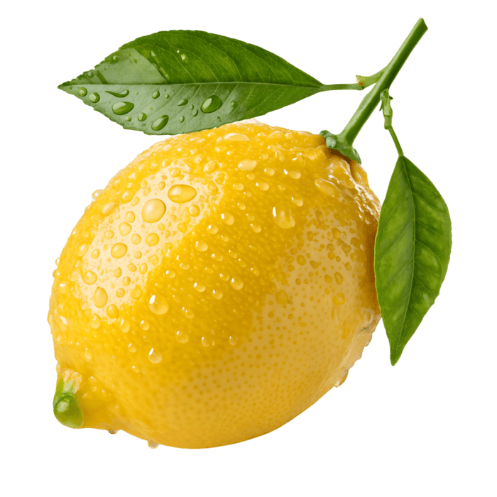
Витамин C и яркая кислотность в блюде.